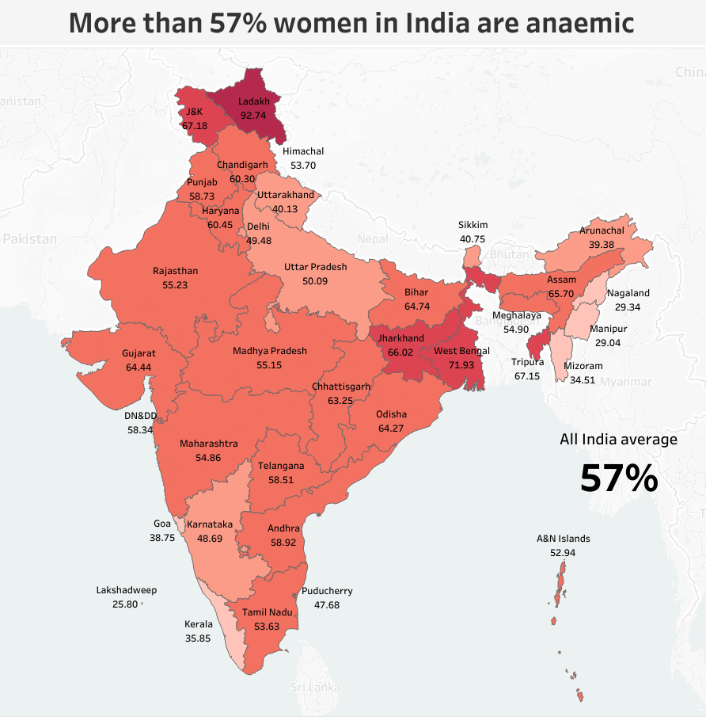

Analysed Olympic History (1896-2016) containg more than 270,000 rows of dataset on PostgreSQL.
Further visualized the data for better understanding on Tableau.
Click above to view SQL code | Click below to view Tableau Dashboard
This project aims to conduct growth analysis on Netflix, delving into data on total TV shows and movies categorized by country, year, genre and many more.
The analysis provides insights into the platform's evolving content landscape and expansion dynamics.
This project analyzes "Executive Sales" backed by Superstore dataset, showcases sales done by Consumer, Corporate and Home Office in a simple yet effective way.
RFM analysis: Recency (When did they last order ?)
| Frequency (How often they make purchases ?)
| Monetary value (How much money they spent ?)
is a marketing analysis tool used to identify a firm's best clients based on the nature of their spending habits. Further, it showcases Avg. order value, Total Products and Unique products purchased by the individual customers.

This project analyzes Total sales, quantity and profit ratio of latest year vs previous year. Further, showcases latest year sales by subcategory with reference of previous year sales.
By filtering out them by category, segment and ship mode.

This project analyzes the health survey released by the National Family Health Survey (NFHS), 2019-21. The data indicate that more than 57% of women in India are anemic,
and more than 18.7% of men above the age of 15 consume alcohol. Additionally, the dashboard delves into district-level statistics.
This project analyzes Post-Covid Airline traffic of all countries by individual date. With this dashboard it is clear that US has the most complex airline network of all countries.
Purpose of this project is to learn makeline feature in Tableau and use of the same in business.
Stack Overflow is the largest online community for developers to learn and excel in programming. Every year, SO conducts a survey to deliver industry leading insights.
In May 2023 over 90,000 developers responded to our annual survey about how they learn and level up, which tools they're using, which ones they want. The analysis is done via Python libraries Pandas, Matplotlib & Seaborn.

This project successfully extracts valuable data on Netflix shows and movies using Python. Which includes comprehensive information on content,
genres, cast, and more. It can be goldmine for data analysts, enabling in-depth insights into user preferences, content trends, and regional variations.
Corrected version:
"This project is built on Google Sheets, comprising income and expense columns to track transactions and summarize each month.
The spreadsheet is supported by data validation, conditional formatting, and advanced formulas."
Corrected version:
"This project is built on Google Sheets and aims to track habits, recording them every month, and showcasing progress based on daily task completion.
The spreadsheet is supported by data validation, conditional formatting, and advanced formulas."